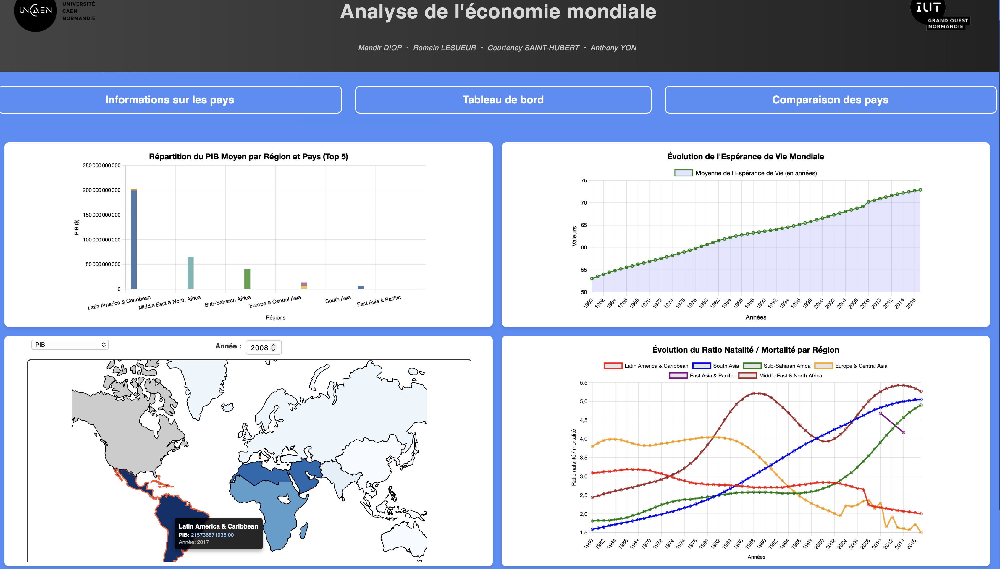

EcoDashboard — Analyse de l'économie mondiale
Dashboard interactif permettant d’analyser et comparer les indicateurs économiques mondiaux grâce à une interface dynamique et des visualisations avancées.
PHP
SQLite
Chart.js
GeoJSON
DataViz
MVC

Contexte
Projet réalisé dans le cadre du BUT Science des Données. L’objectif : développer un tableau de bord complet pour analyser l'économie mondiale à partir d'indicateurs fiables. Le projet repose sur une architecture MVC en PHP, une base SQLite et des visualisations interactives via Chart.js et GeoJSON.
Objectifs du projet
- Mettre en place un dashboard interactif et responsive
- Manipuler une base de données d’indicateurs économiques mondiaux
- Créer des visualisations dynamiques (lignes, barres, aires, carte)
- Comparer pays et régions de manière intuitive
- Optimiser les requêtes SQL pour de meilleures performances
Méthodologie
- Analyse et schématisation du modèle de données
- Implémentation des modèles PHP (pays, indicateurs, indices…)
- Développement des vues du tableau de bord (+ Chart.js)
- Création des filtres interactifs (régions, pays, années…)
- Tests, optimisations SQL et documentation finale
Résultats
EcoDashboard offre une interface complète permettant une analyse claire et structurée de l'économie mondiale :
- Visualisation de données avancée : Intégration de graphiques dynamiques (lignes, barres, aires) et d'une Carte mondiale interactive (via GeoJSON).
- Analyse Filtrable : Les données sont filtrables par régions, pays et années pour observer l'Évolution temporelle d’indicateurs clés comme le PIB.
- Comparaison Intuitive : Le dashboard permet des Comparaisons multi-pays et multi-régions sur des indicateurs spécifiques.
- Dédicacée : Le menu supérieur donne accès à des pages spécifiques, notamment les informations détaillées sur un pays donné et une page de comparaison entre deux pays.

Capture d'écran de la page du tableau de bord
Structure du projet
models/ # Accès aux données (SQLite) views/ # Pages du tableau de bord controllers/ # Logique MVC public/js/ # Graphiques + interactions public/css/ # Styles du projet sql/ # Base SQLite docs/ # Documentation + diagrammes